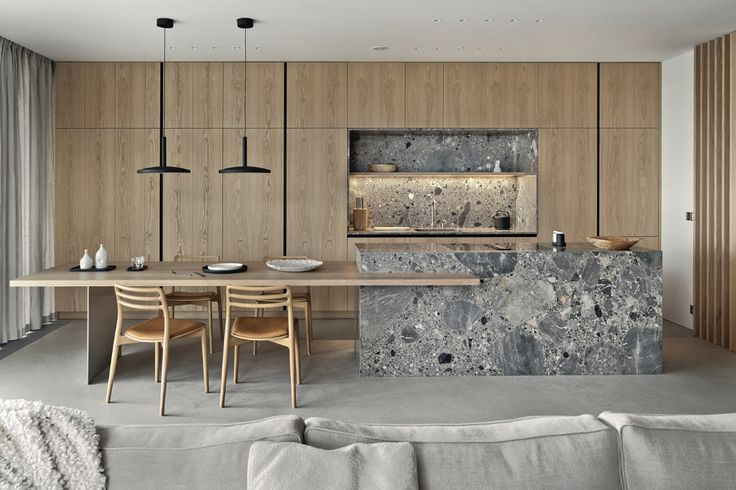
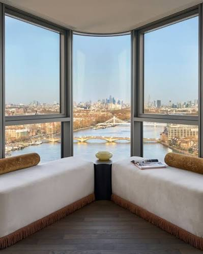
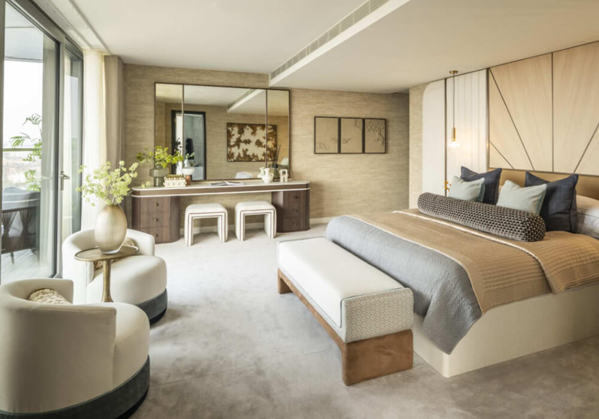

£550,000
Princes Dock, Liverpool
2 Bedrooms
2 Bathrooms
Beautiful Views



Experience elite maritime living in this exceptional waterfront apartment, situated in the heart of Liverpool’s vibrant docks. Featuring sweeping floor-to-ceiling glass, high-specification contemporary interiors, and dramatic views across the River Mersey, this property offers a seamless blend of historic architectural backdrop and sleek modern luxury.